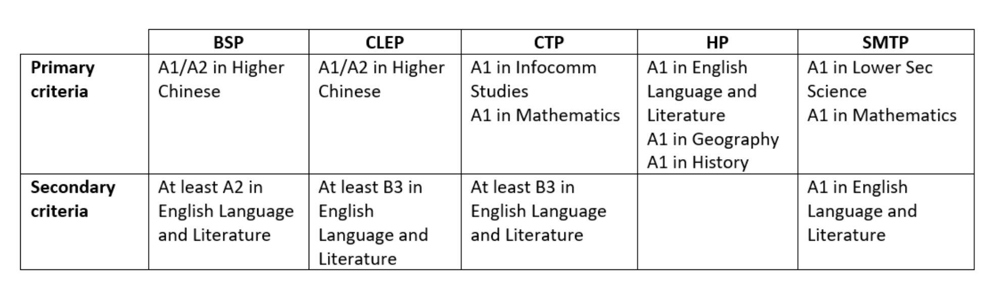

Academic Results
In my 2nd year, my results are fairly alright and I have improved my Chinese and English grades from last year EOY to now (Mid-Year).
| Subjects | 1st Year EOY | 2nd Year Mid Year |
|---|---|---|
| English | B3 | A2 |
| Chinese | A2 | A1 |
| Mathematics | A1 | A1 |
| Science | A1 | A1 |
| Geography | A1 | A1 |
| History | A1 | A1 |
| Infocomm | A1 | A1 |
When I was sec 1, I struggled with my English essay writing. Now, I am much more confident in writing narrative and expository essays and I feel that I have improved from last year.
Academic Goals
This is the criteria for each talent programme according to the 2022 website.
With the talent programmes in place, my goals have changed to:
- Hopefully get A1 in English, Science and Math Alternative Assignments and other tests for SMTP or..
- Stay consistent and continue to get A1 in my subjects as much as possible
- Improve my English to A1
- Get into either CTP or SMTP